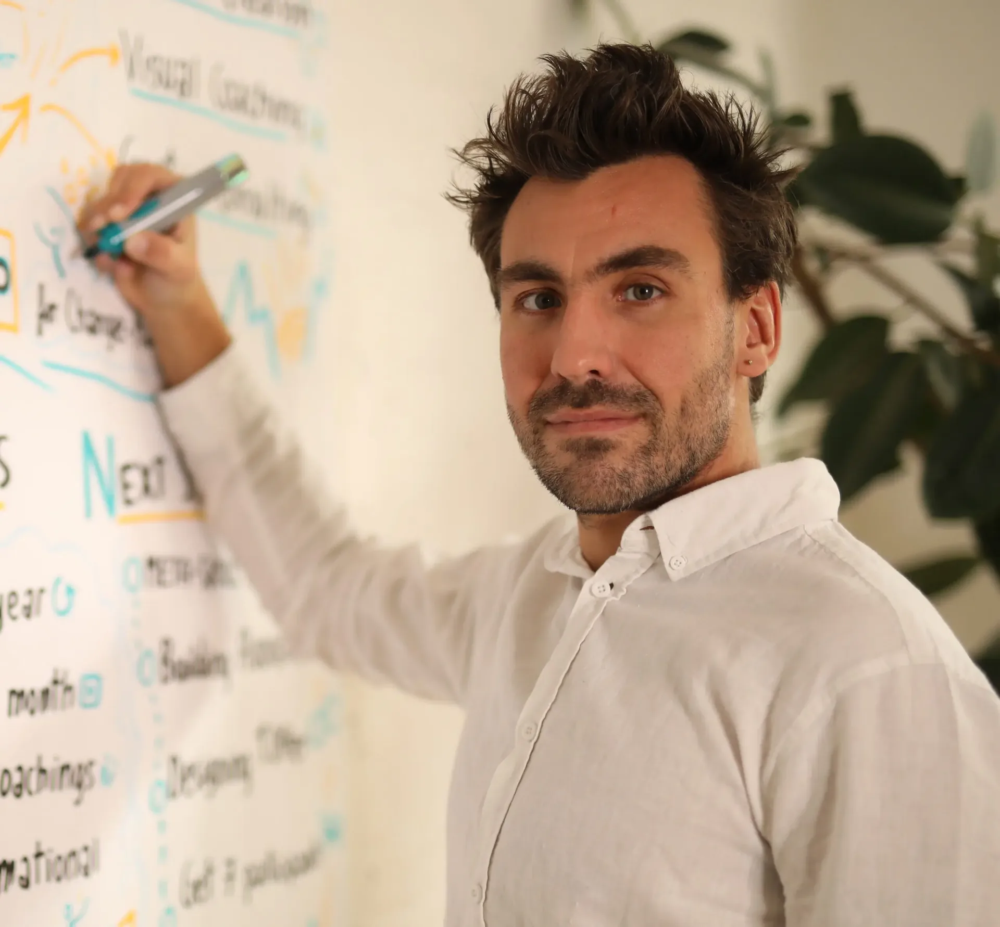

Du erzählst. Ich frage und zeichne.You talk. I ask and draw.
Im Einzelcoaching arbeiten wir an dem, was Dich gerade beschäftigt: eine Vision, ein Vorhaben, Deine eigene Marke. Ich höre zu, stelle Fragen und zeichne mit. So siehst Du Deine Gedanken vor Dir und erkennst, wo Du ansetzen kannst.In one-to-one coaching, we work on what’s on your mind right now: a vision, a project, your own brand. I listen, ask questions and draw along. That way, you see your thoughts in front of you and recognise where to start.
VISION ist eine einzelne Session von 90 Minuten. Die VENTURE Journey führt über sieben Sessions und rund vier Monate.VISION is a single 90-minute session. The VENTURE Journey runs over seven sessions and about four months.

Gedanken, die Du sehen kannst.Thoughts you can see.Aus dem Gespräch entsteht ein Bild, mit dem Du weiterdenkst.The conversation turns into a picture you can keep thinking with.
Ein Thema. Ein Gegenüber.One topic. One sparring partner.
Eine Vision klärenClarify a vision
Du trägst eine Idee oder ein Konzept mit Dir herum und willst verstehen, wohin es führt und womit Du anfängst.You’ve been carrying an idea or a concept around and want to understand where it leads and where to begin.
Deine Marke aufbauenBuild your brand
Du bist Trainer oder Coach und willst, dass Organisationen Dich finden, verstehen und beauftragen.You’re a trainer or coach and want organisations to find you, understand you and hire you.
Richtung findenFind your direction
Vieles ist möglich, und alles scheint wichtig. Du suchst Orientierung, um zu entscheiden, was jetzt dran ist.A lot is possible, and everything seems important. You’re looking for orientation to decide what matters now.
So arbeite ichHow I work
Erst zuhören. Dann sichtbar machen.First listen. Then make it visible.
Mitzeichnen geht auch digital, zum Beispiel auf dem iPad.Drawing along works digitally too, for example on an iPad.
Zuhören und fragenListen and ask
Du erzählst, was Dich beschäftigt. Ich frage nach, bis klar wird, worum es Dir wirklich geht.You tell me what’s on your mind. I ask until it becomes clear what you really care about.
MitzeichnenDraw along
Während wir sprechen, zeichne ich mit. Deine Gedanken werden zu einem Bild, in dem Du Zusammenhänge siehst und erkennst, was noch fehlt.While we talk, I draw along. Your thoughts turn into a picture where you see connections and notice what’s still missing.
EntscheidenDecide
Aus dem Bild ergibt sich, was jetzt wichtig ist. Du gehst mit einem nächsten Schritt raus, den Du selbst gewählt hast.The picture shows what matters now. You leave with a next step you have chosen yourself.
Wähle Dein FormatChoose your format
Eine Session oder ein ganzer Weg.One session or a whole journey.
EinzelsessionSingle session
VISION Coaching
1 Session · 90 Minuten1 session · 90 minutes
Für eine Vision oder ein Konzept, das Du klären willst. In sechs Schritten von V bis N ergründen wir, wohin Du willst, und finden Deinen ersten Schritt.For a vision or a concept you want to clarify. In six steps from V to N, we explore where you want to go and find your first step.
Deine Vision in Deinen WortenYour vision in your own words
Ein klarer nächster SchrittA clear next step
Termin direkt online buchenBook a time directly online
7 Sessions · rund 4 Monate7 sessions · about 4 months
Für Trainer und Coaches, die mit Organisationen arbeiten. Schritt für Schritt klären wir Positionierung, Angebot und Akquise. Dabei entsteht mit KI Deine Website.For trainers and coaches who work with organisations. Step by step, we clarify your positioning, offer and client acquisition. Along the way, we build your website with AI.
Sieben Sessions à 90 Minuten in Deinem TempoSeven 90-minute sessions at your own pace
Material zu jedem SchrittMaterial for every step
Am Ende steht Deine WebsiteBy the end, your website is in place
Ich begleite Unternehmen bei Visions- und Strategiearbeit und verbinde dabei Visual Facilitation, Systemdenken und Organisationsentwicklung.I support companies in their vision and strategy work, bringing together visual facilitation, systems thinking and organisational development.
Im Einzelcoaching nutze ich dieselben Werkzeuge für Dein Thema: gute Fragen, einen klaren Ablauf und ein Bild, das zeigt, was zusammenhängt.In one-to-one coaching, I use the same tools for your topic: good questions, a clear process and a picture that shows how things connect.